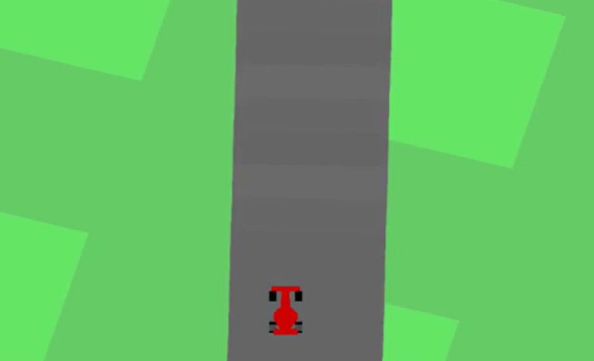

CNN-based actor–critic policy controlling a car in the CarRacing-v3 environment using stacked frames.
This project uses reinforcement learning ideas to control a car in the CarRacing-v3 environment from Gymnasium. I built a convolutional actor–critic policy network in PyTorch that takes a stack of recent frames as input and outputs discrete driving actions. The rollout is recorded and exported as an MP4 video for easy visualisation.
FrameStackWrapper that converts RGB frames to grayscale,
resizes them to 96×96 and stacks the last 4 frames to give
the network short-term temporal context.
Categorical distribution over the policy logits to
sample actions, similar to what is used in PPO/actor–critic methods.
[steer, gas, brake] to drive the car in the environment.
gym.make("CarRacing-v3", render_mode="rgb_array")
and wrap it with FrameStackWrapper(k=4).(1, 4, 96, 96) tensor.CNNPolicy.act() method normalizes the input, runs it through
the convolutional stack, and returns a sampled action plus value estimates.env.step().imageio.mimsave(), then played with an HTML video tag.deque for frame stacking